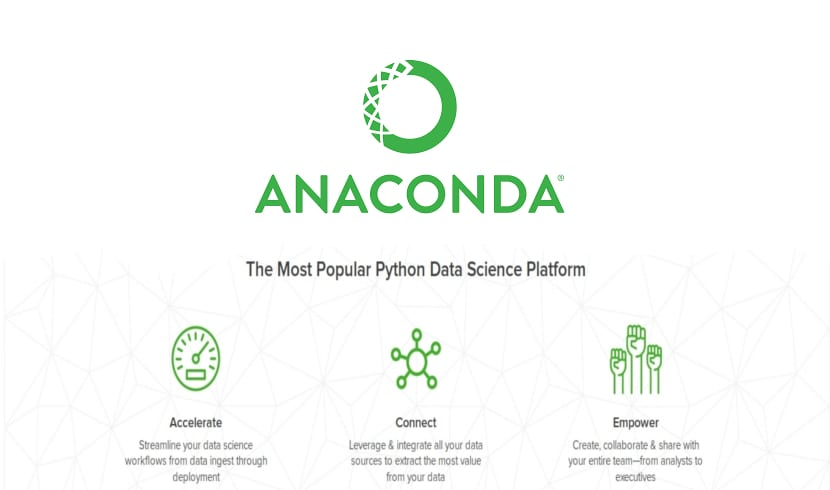

2 Setting Up Your Python Environment
Before we dive deep into the world of data science, we need to get you set up with the tools of the trade. Just like a carpenter needs a good workbench and set of tools, a data scientist needs a place to write and run code. The good news? There are several ways to do this—and even better, there’s no one-size-fits-all answer. You’ll get to choose the approach that works best for you.
In this chapter, we’ll introduce three common ways to set up a Python environment: Google Colab, the Anaconda distribution, and Visual Studio Code. We’ll start with the path of least resistance (Colab), then explore more powerful and flexible setups as we go.
We’ll kick things off by writing your very first Python program—a classic:
print("Hello World")You might be wondering—why does everyone always start with print("Hello World")? It’s a tradition in programming that goes back decades. This simple line of code is often the first one beginners write because it’s the easiest way to confirm that everything is working correctly. It doesn’t require any complex logic or setup—just a basic command that tells the computer to display a message on the screen. Think of it as the programmer’s equivalent of saying “Testing, 1, 2, 3…” into a microphone. If you see “Hello World,” it means your environment is set up and ready to go!
By the end of this chapter, you’ll not only have a working Python environment, but you’ll also understand the pros and cons of each approach and know how to get started coding in any of them. Let’s get your hands on the keyboard.
2.1 Hello World
Welcome to your first moment of writing real Python code. We’re not going to lecture you about the perfect setup right away. Instead, let’s just do something. This short activity gives you a quick win and shows you how easy it can be to get started with Python—no installations or configurations required.
Running Python in Google Colab
Google Colab is a free, cloud-based tool that lets you run Python code in your browser. It requires no setup and is perfect for getting started.
Sign in with your Google account (you’ll need one).
Click on “New Notebook.”
In the cell that appears, type:
print("Hello World")Press Shift + Enter to run the cell.
You should see:
Hello WorldYou just wrote and ran your first line of Python code! 🎉🎉🎉
Knowledge Check
Try This: Generate Python Code with AI
After you run your print("Hello World"), take a moment to explore the built-in AI assistant in Google Colab. You might notice a prompt that says:
“Start coding or generate with AI”
This is your chance to see how AI tools can help you write Python code. Try typing in a prompt or click on the suggestion box to let Colab help generate code for you. You can run the code to see what it does—and even tweak it to make it your own.
Feel free to come up with your own prompt, or try one of these to get started:
- “Write Python code to compute the area of a 12-inch pizza.”
- “Write Python code to find all prime numbers between 2 and 100.”
- “Write a Python program that asks for a user’s name and prints a greeting.”
Next, we’ll step back and look at what just happened. Then, we’ll dive into the different ways you can set up your Python environment, from easy to advanced.
2.2 Development Environments
Now that you’ve written and run your first line of Python code, it’s time to step back and understand where that code actually runs—and what your options are going forward.
In programming, the place where you write and run your code is called your development environment. Think of it like your digital workspace: it includes the tools, interface, and underlying systems that allow you to code, debug, and manage projects.
There’s no single “best” environment—just the one that’s best for your current needs. In this course, you’ll be exposed to three common Python environments used by data scientists, ranging from beginner-friendly to professional-grade. Each has its own strengths and trade-offs, and over time you may find yourself using all three depending on the situation.
Below is a quick overview of the three environments we’ll focus on in this course.
Google Colab
You’ve already used this! Colab is a cloud-based environment that lets you run Python in your browser, no installation required. It’s perfect for beginners or anyone who wants to start quickly and painlessly.
Pros:
- No installation needed—works in your browser.
- Built-in support for Jupyter notebooks.
- Easy to share and collaborate via Google Drive.
- Includes access to an AI assistant to help generate code.
Cons:
- Requires an internet connection.
- Limited access to your local files or custom setups.
- Not commonly used in professional, production-level environments.
While Colab is excellent for learning, prototyping, and sharing code, it isn’t typically used in workplace settings—especially for production code, version-controlled projects, or large-scale data workflows. Because of this, we encourage you to use Colab to get started quickly, but strive to set up one of the other environments (Anaconda or VS Code) as you progress through the course. These tools will better reflect the development environments you’re likely to use in internships, co-ops, or full-time roles
Anaconda Distribution
Anaconda is a local setup that installs Python along with most of the libraries and tools used in data science, including Jupyter Notebook and JupyterLab. It’s an excellent next step for learners who want more control while still keeping things simple.

Pros:
- All-in-one installation of Python + essential libraries.
- User-friendly interface via Anaconda Navigator.
- Includes JupyterLab for notebook-based development.
- Works locally without internet access.
Cons:
- Large download and install size (~3 GB).
- You’ll need to learn how to manage packages and environments with Conda.
- Slightly more complex than Colab, but still beginner-friendly.
Visual Studio Code (VS Code)
VS Code is a lightweight but powerful code editor used by professional developers and data scientists. With the right extensions, it supports Python and Jupyter notebooks and is ideal for building larger or more complex projects.
VS Code is my preferred environment for writing code, so throughout this course, most of the code you’ll see during lectures and demos will be displayed using VS Code. This will give you exposure to an industry-standard tool that’s commonly used across the kinds of organizations you’re likely to intern or work at.

Pros:
- Highly customizable and fast.
- Great for real-world development workflows.
- Integrated support for version control (Git), debugging, and extensions.
Cons:
- Steeper learning curve—more setup required.
- Requires separate installations of Python, extensions, and Jupyter support.
- Best suited for students who want to grow into more advanced tools.
2.3 Choosing Your Path Forward
How you decide to move forward from here is up to you. For now, you’re welcome to continue using Google Colab, especially if it’s helping you build confidence and get comfortable writing Python code without worrying about software setup.
That said, by the end of this course, you’ll be expected to have a local Python development environment set up on your computer—either using Anaconda or Visual Studio Code. These environments are more reflective of what you’ll use in real-world internships, co-ops, or full-time roles, and they’ll give you greater flexibility and power as your projects grow in complexity.
When you’re ready to make the leap, use the resources below to guide you:
- Anaconda Installation: Appendix 35
- VS Code Installation: Appendix 36
You don’t need to switch immediately, but the sooner you get comfortable working locally, the better prepared you’ll be for the kinds of tasks data scientists regularly tackle in the field.
2.4 Exercise: Pick Your Environment and Make It Yours
Choose one of the following paths based on your current comfort level and curiosity. Your goal is to take one step toward becoming confident in your development environment.